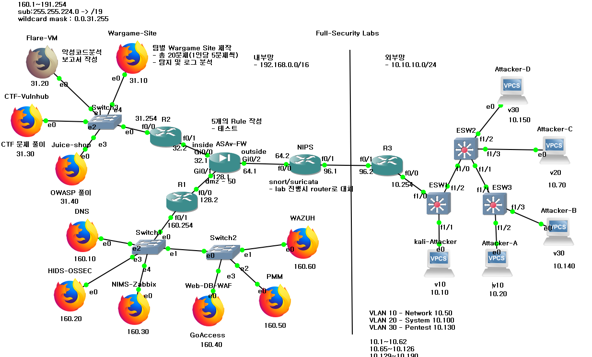
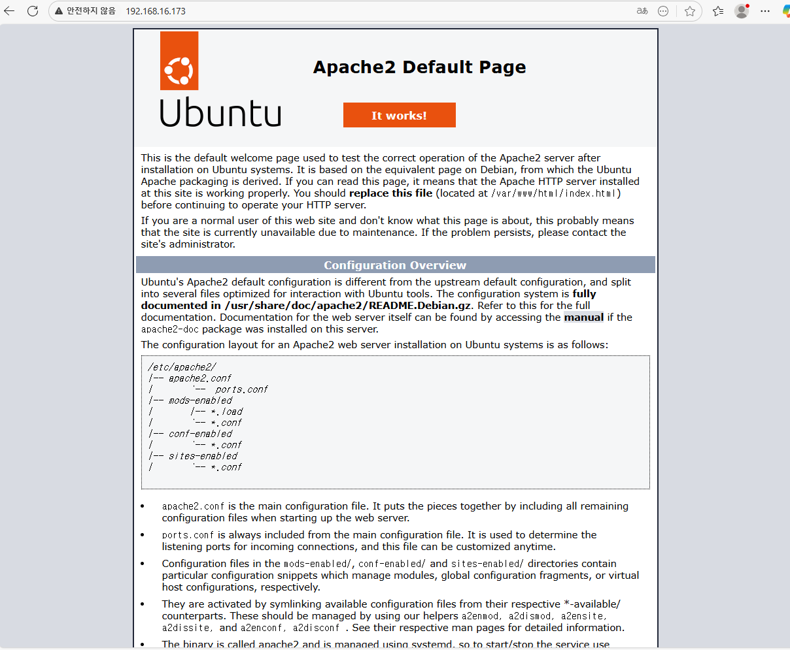
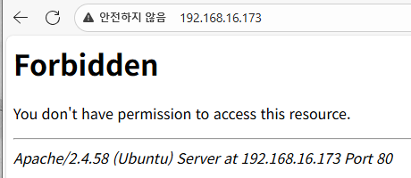
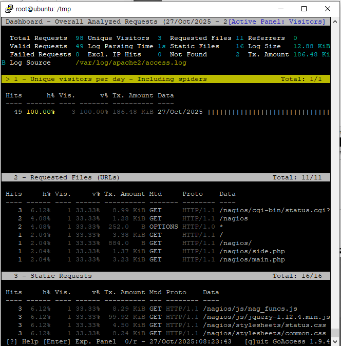
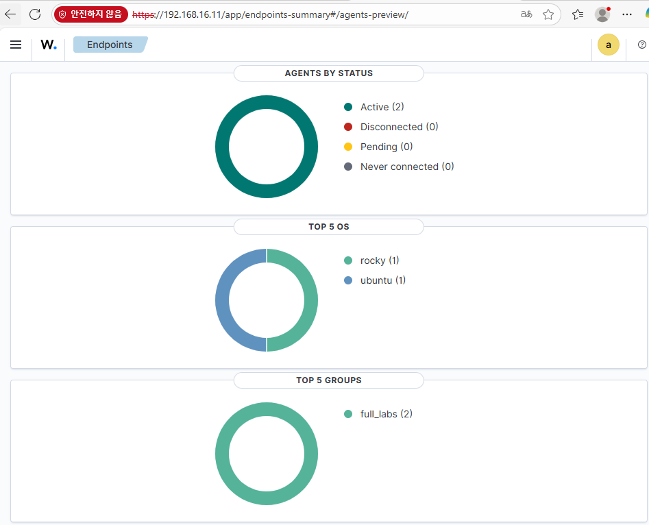
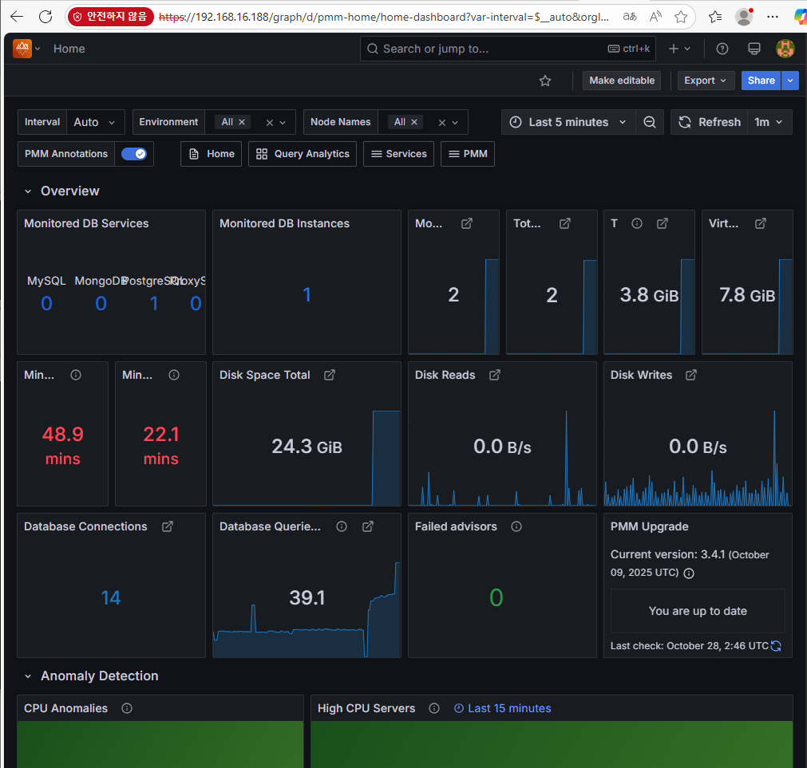
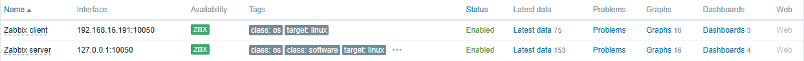
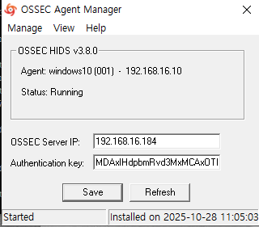

Enterprise Network Segmentation & Wargame Lab
GNS3와 가상화 환경을 연동하여 엔터프라이즈급 네트워크 인프라를 설계하고, 다계층 보안 시스템(WAF, SIEM, IDS)과 관제 환경을 통합 구현한 프로젝트입니다.
00. Overall Network Topology

Figure 1. 통합 네트워크 인프라 구성도 (GNS3 & VMware 연동)
GNS3를 이용하여 가상 네트워크 인프라를 구축하고, 방화벽 정책 설정, 라우터 이중화(HSRP), VPN 서버 구축, IDS 및 SIEM 시스템을 각각 개별적으로 구축하여 실습한 프로젝트입니다.
01. GNS3: Infrastructure Design
Subnetting (Internal Network 192.168.0.0/16)
부서 간 효율적인 자원 분배와 보안을 위해 192.168.0.0/16 대역(내부망)을 6개의 주요 서브넷으로 나누어 설계했습니다.
| Subnet Index | Network Address | Usable IP Range | Broadcast Address |
|---|---|---|---|
| #1 | 192.168.0.0 | 192.168.0.1 ~ 31.254 | 192.168.31.255 |
| #2 | 192.168.32.0 | 192.168.32.1 ~ 63.254 | 192.168.63.255 |
| #3 | 192.168.64.0 | 192.168.64.1 ~ 95.254 | 192.168.95.255 |
| #4 | 192.168.96.0 | 192.168.96.1 ~ 127.254 | 192.168.127.255 |
| #5 | 192.168.128.0 | 192.168.128.1 ~ 159.254 | 192.168.159.255 |
| #6 | 192.168.160.0 | 192.168.160.1 ~ 191.254 | 192.168.191.255 |
VLAN Configuration

Router VLAN 서브 인터페이스 Encapsulation(dot1Q) 설정

VLAN 간 Ping 테스트를 통한 정상 연결 상태 확인
02. VM-Ware: Security Solutions & Hardening
Web Security (WAF & GoAccess)

WAF 적용 전: 192.168.16.173 웹페이지 접속 확인

WAF 적용 후: 403 Forbidden 응답을 통한 공격 차단 검증

Linux 터미널 내 GoAccess 구동 및 로그 분석

GoAccess 웹 대시보드 시각화 결과
Monitoring & SIEM (Wazuh, PMM, Zabbix, OSSEC)

WAZUH: 보안 이벤트 통합 Status Ring 대시보드

WAZUH: 상세 에이전트 정보 및 위협 탐지 목록

PMM Server: DB 성능 모니터링 대시보드

PMM Client: 192.168.16.188 서버 연결 설정

Zabbix: 네트워크 에이전트 등록 상태 확인

OSSEC: Windows 10 클라이언트 침입 탐지 확인
Network & Analysis (DNS & OWASP)

192.168.16.10 -> park.testjin.com 도메인 접속 성공